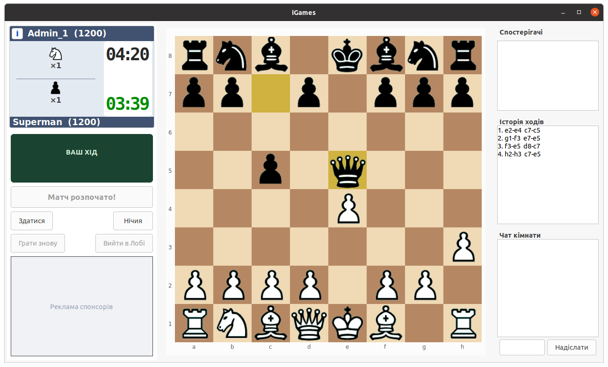

Миттєвий запуск та стабільність
Забудьте про важкі сайти та затримки. Наш комп'ютерний додаток важить лічені мегабайти, запускається за секунду та бездоганно працює навіть на слабких ноутбуках.
🚀 Сервіс працює в режимі бета-тестування. Порт ігрового сервера: 443. Поточна адреса:
Інтелектуальні ігри
Грай у шахи, класичні шашки 8х8 та довгі нарди у блискавичному додатку для вашого комп'ютера. Наш надійний серверний захист повністю контролює правила та забезпечує 100% чесну гру без читерів.
Доступно для Windows, Linux та macOS

iGames — це легка та сучасна ігрова екосистема, створена для шанувальників інтелектуальних настільних ігор, де швидкість роботи поєднується з безкомпромісною чесністю онлайн-змагань.
Забудьте про важкі сайти та затримки. Наш комп'ютерний додаток важить лічені мегабайти, запускається за секунду та бездоганно працює навіть на слабких ноутбуках.
Повне блокування обману. Усі ходи та кидки кубиків прораховуються на сервері, а вбудована система відгуків та скарг дозволяє оцінювати поведінку суперників після кожної партії.
Шахи, динамічні класичні шашки 8х8 з можливістю бити назад і далекобійними дамками, а також довгі нарди. Усередині — особистий профіль із перемогами, нічиїми, поразками та рейтингом ELO, живі чати кімнат і загального лобі, статистика сервера з лічильниками онлайн-гравців та активних партій, а також тренування з ботами різної складності.
Приєднуйся до екосистеми iGames, створюй приватні кімнати, запрошуй друзів на інтелектуальні дуелі та ділися відгуками про зіграні матчі. Разом ми будуємо найчеснішу ігрову спільноту!